Helen Spooner — BAFTA, Emmy and RTS award nominated filmmaker, with 11 years making documentary for BBC, Channel 4, Netflix, MSNBC and ARTE.
Broadcast and streaming documentary work spanning eleven years, from single films to multi-part series.
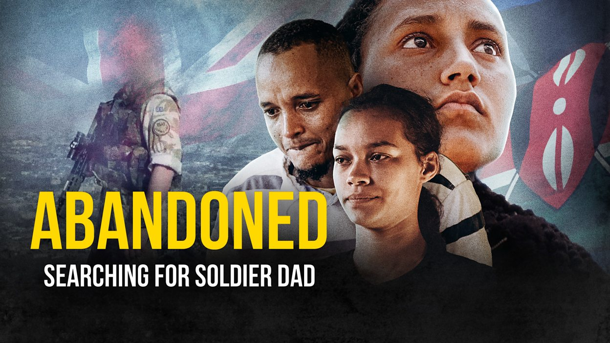
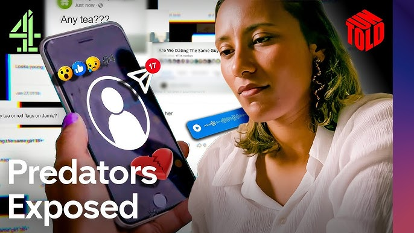
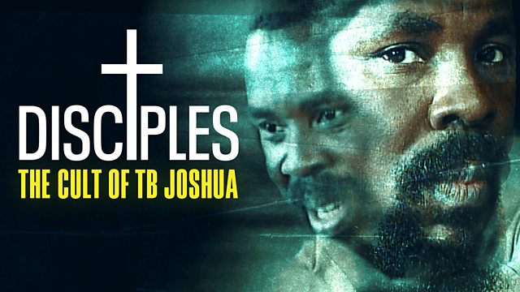
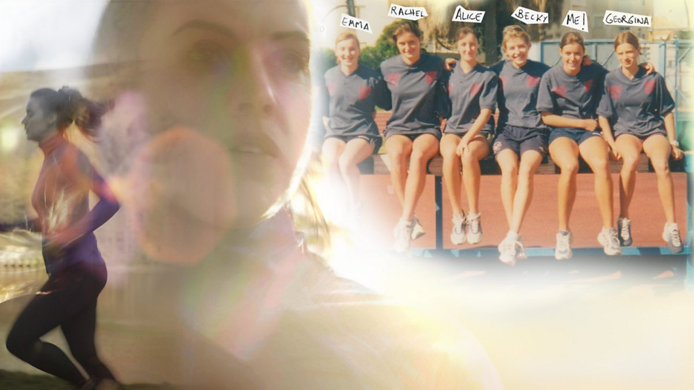
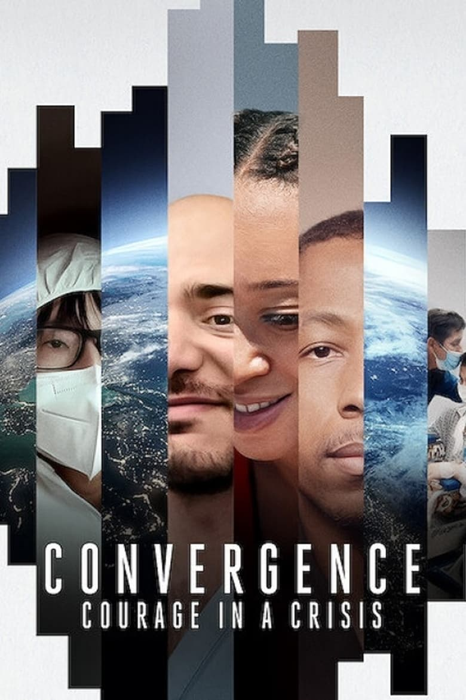
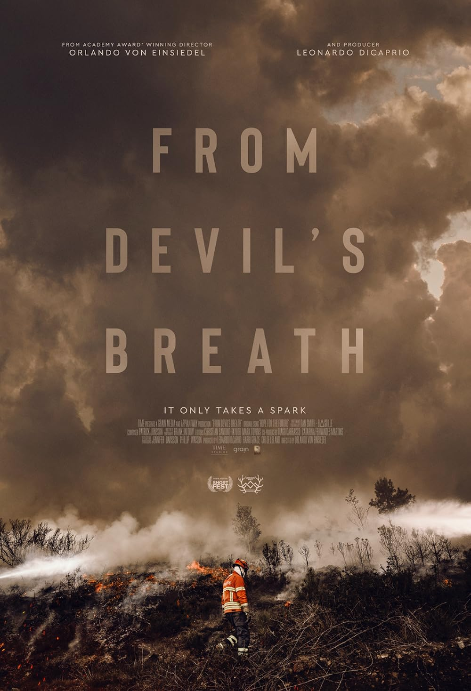
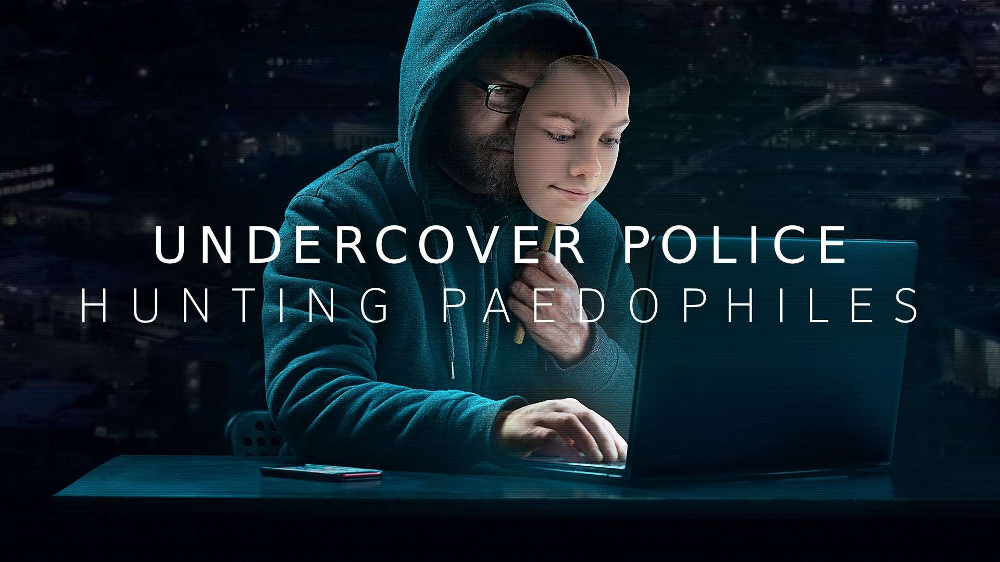
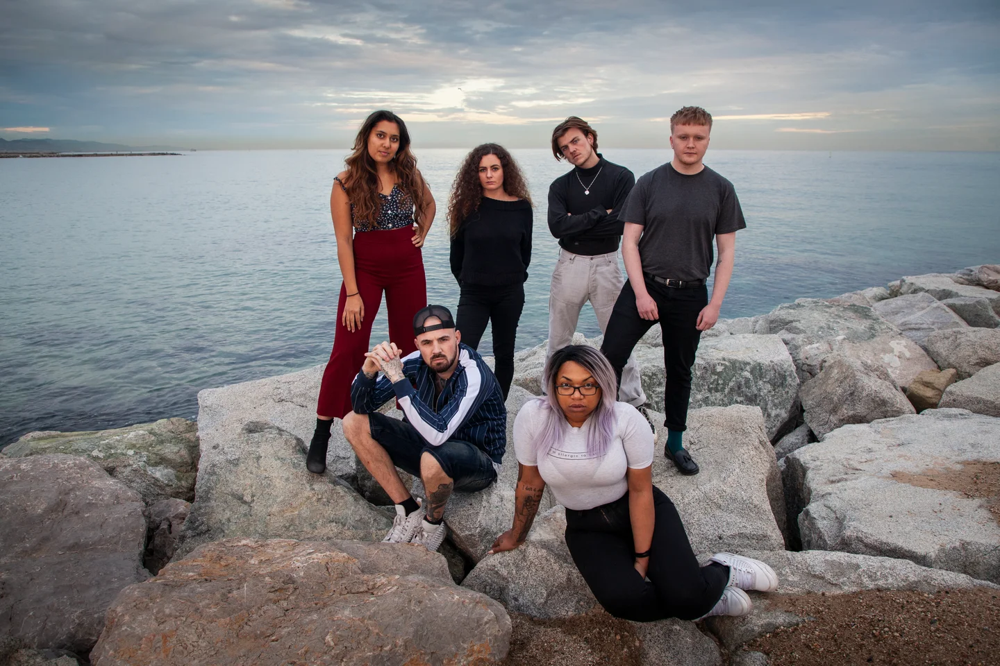
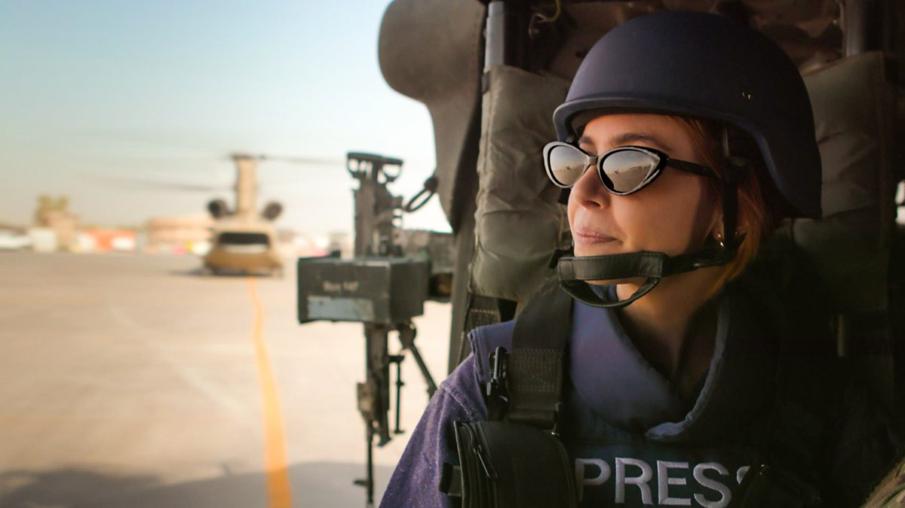
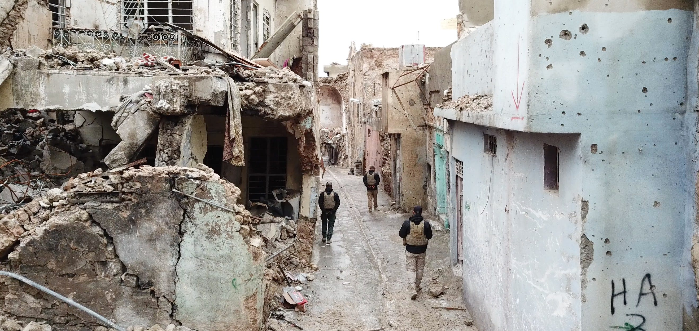
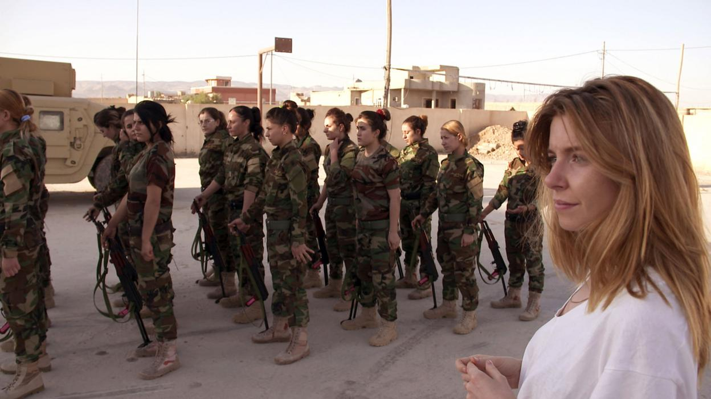
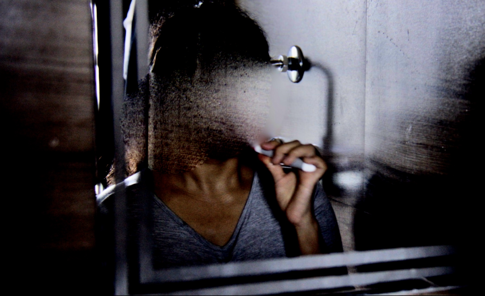
Fiction and narrative-led storytelling.
A feature film based on the true story of one man's extraordinary survival in the Ukraine war.
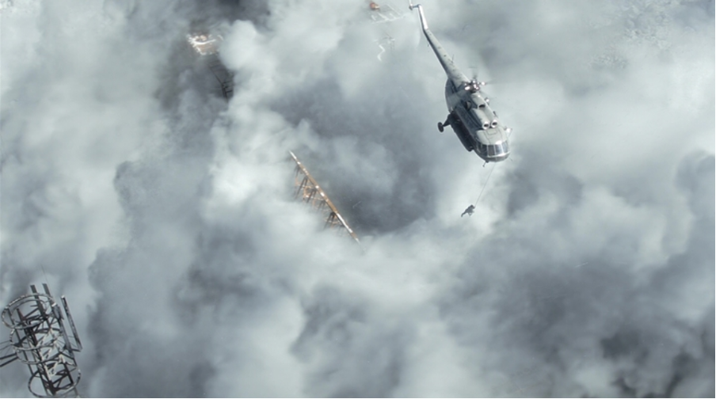
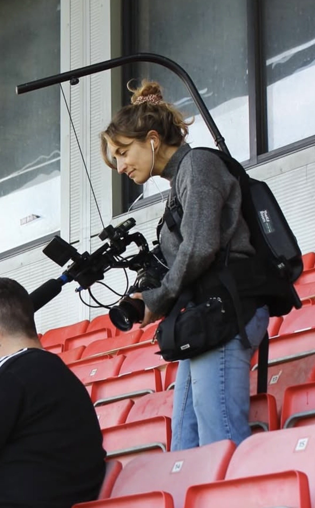
With 11 years making documentary for BBC, Channel 4, Netflix, MSNBC and ARTE, and 15+ broadcast credits to her name, Helen directs and produces character-led, investigative films — work recognised with BAFTA, Emmy and RTS nominations.
Her work moves between investigative series and feature documentary — directing intimate, character-led films and producing high-stakes journalism on subjects spanning conflict, crime and abuse of power.